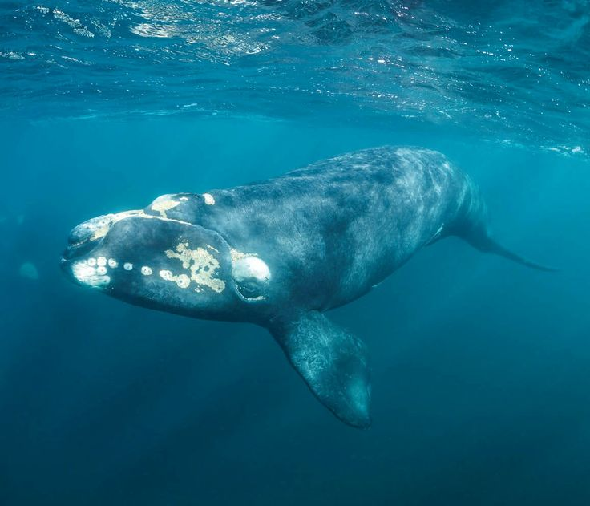

Southern right whales (Eubalaena australis) are large, slow-moving baleen whales found in the Southern Hemisphere. They are easily recognized by their dark bodies, callosities on their heads, and broad, arching mouths. These gentle giants feed by skim-feeding on plankton and small crustaceans and are known for their acrobatic surface behaviors, including breaching and tail-slapping. Southern right whales are highly social, often seen in small groups, and return to coastal bays each year to mate and give birth, making them a favorite for whale watchers worldwide.